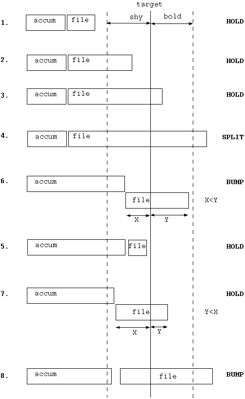
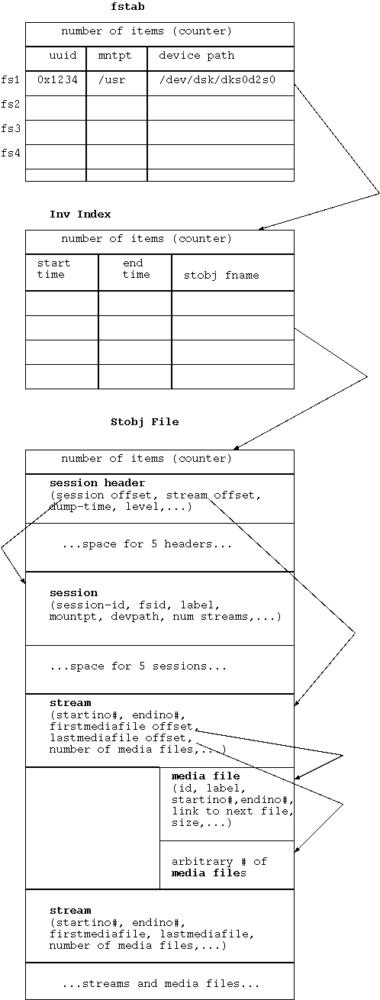

Media files are probably used to provide a way of recovering more data in xfsrestore(1) should there be some media error. They provide a self-contained unit for restoration. If the dump media is a disk file (drive_simple.c) then I believe that only one media-file is used. Whereas on tape media, multiple media files are used depending upon the size of the media file. The size of the media file is set depending on the drive type (in IRIX): QIC: 50Mb; DAT: 512Mb; Exabyte: 2Gb; DLT: 4Gb; others: 256Mb. This value (media file size) is now able to be changed by the "-d" option. . Also, on tape, the dump is finished by an inventory media file followed by a terminating null media file.
A global header is placed at the start of each media file.
global_hdr_t (4K bytes)
magic# = "xFSdump0"
version#
checksum
time of dump
ip address
dump id
hostname
dump label
pad to 1K bytes
drive_hdr_t (3K bytes)
drive count
drive index
strategy id = on-file, on-tape, on-rmt-tape
pad to 512 bytes
specific (512 bytes)
tape:
rec_hdr
magic# - tape magic = 0x13579bdf02468acell
version#
block size
record size
drive capabilities
record's byte offset in media file
byte offset of rirst mark set
size (bytes) of record containing user data
checksum (if -C used)
ischecksum (= 1 if -C used)
dump uuid
pad to 512 bytes
upper: (2K bytes)
media_hdr_t
media-label
previous media-label
media-id
previous media-id
5 media indexes - (indices of object/file within stream/media-object)
strategy id = on-file, on-tape, on-rmt-tape
strategy specific data:
field to denote if media file is a terminator (old fmt)
upper: (to 2K)
Note that the strategy id is checked on restore so that the dump strategy and the strategy used by restore are the same with the exception that drive_scsitape matches with drive_minrmt. This strategy check has caused problems with customers in the past. In particular, if one sends xfsdump's stdout to a tape (i.e. xfsdump -L test -M test - / >/dev/tape) then one can not restore this tape using xfsrestore by specifying the tape with the -f option. There was also a problem for a time where if one used a drive with the TS tape driver, xfsdump wouldn't recognise this driver and would select the drive_simple strategy.
rec_hdr magic# - tape magic = 0x13579bdf02468acell version# block-size record-size drive capabilities record's byte offset in media file byte offset of rirst mark set size (bytes) of record containing user data checksum (if -C used) ischecksum (= 1 if -C used) dump uuid pad to 512 bytes
I can not see where the block-size ("tape_blksz") is ever used ! The record-size ("tape_recsz") is used as the byte count to do the actual write and read system calls.
There is another layer of s/ware for the actual data on the tape. Although, one may write out an inode-map or directory entries, one doesn't just give these record buffers straight to the write system call to write out. Instead, these data objects are written to buffers (akin to <stdio>). Another thread reads from these buffers (unless its running single-threaded) and writes them to tape. Specifically, inside a loop, one calls do_get_write_buf, copies over the data one wants stored and then calls do_write_buf, until the entire data buffer has been copied over.
1. main process main.c
/ | \
/ | \
2. stream stream stream dump/content.c restore/content.c
manager manager manager
| | |
3. drive drive drive common/drive.[hc]
object object object
| | |
4. O O O ring buffers common/ring.[ch]
| | |
5. slave slave slave ring_create(... ring_slave_entry ...)
thread thread thread
| | |
6. drive drive drive physical drives
device device device
Each stream is broken into two threads of control: a stream manager; and a drive manager. The drive manager provides an abstraction of the tape device that allows multiple classes of device to be handled (including normal files). The stream manager implements the actual dump or restore functionality. The main process and stream managers interact with the drive managers through a set of device ops (e.g.: do_write, do_set_mark, ... etc).
The process hierachy is shown above. main() first initialises the drive managers with calls to the drive_init functions. In addition to choosing and assigning drive strategies and ops for each drive object, the drive managers intialise a ring buffer and (for devices other than simple UNIX files) sproc off a slave thread that that handles IO to the tape device. This initialisation happens in the drive_manager code and is not directly visible from main().
main() takes direct responsibility for initialising the stream managers, calling the child management facility to perform the sprocs. Each child begins execution in childmain(), runs either content_stream_dump or content_stream_restore and exits with the return code from these functions.
Both the stream manager processes and the drive manager slaves set their signal disposition to ignore HUP, INT, QUIT, PIPE, ALRM, CLD (and for the stream manager TERM as well).
The drive manager slave processes are much simpler, and are initialised with a call to ring_create, and begin execution in ring_slave_func. The ring structure must also be initialised with two ops that are called by the spawned thread: a ring read op, and a write op. The stream manager communicates with the tape manager across this ring structure using Ring_put's and Ring_get's.
The slave thread sits in a loop processing messages that come across the ring buffer. It ignores signals and does not terminate until it receives a RING_OP_DIE message. It then exits 0.
The main process sleeps waiting for any of its children to die (ie. waiting for a SIGCLD). All children that it cares about (stream managers and ring buffer slaves) are registered through the child manager abstraction. When a child dies wait status and other info is stored with its entry in the child manager. main() ignores the deaths of children (and grandchildren) that are not registered through the child manager. The return status of these subprocesses is checked and in the case of an error is used to determine the overall exit code.
We do not expect slave threads to ever die unexpectedly: they ignore most signals and only exit when they receive a RING_OP_DIE at which point they drop out of the message processing loop and always signal success.
Thus the only child processes that can affect the return status of dump or restore are the stream managers, and these processes take their exit status from the values returned by content_stream_dump and content_stream_restore.
content_init (xfsdump version)
Do up to 5 phases, which create and prune the inode map, calculate an estimate of the file data size and using that create inode-ranges for multi-stream dumps if pertinent.
content_stream_dump
* drive_init1 - initialize drive manager for each stream
- go thru cmd options looking for -f device
- each device requires a drive-manager and hence an sproc
(sproc = IRIX lightweight process)
- if supposed to run single threaded then can only
support one device
- ?? each drive but drive-0 can complete file from other stream
- allocate drive structures for each one -f d1,d2,d3
- if "-" specified for std out then only one drive allowed
- for each drive it tries to pick best strategy manager
- there are 3 strategies
1) simple - for dump on file
2) scsitape - for dump on tape
3) minrmt - minimal protocol for remote tape (non-SGI)
- for given drive it is scored by each strategy given
the drive record which basically has device name,
and args
- set drive's strategy to the best one and
set its strategy's mark separation and media file size
- instantiate the strategy
- set flags given the args
- for drive_scsitape/ds_instantiate
- if single-threaded then allocate a buffer of
STAPE_MAX_RECSZ page aligned
- otherwise, create a ring buffer
- note if remote tape (has ":" in name)
- set capabilities of BSF, FSF, etc.
* create global header
- store magic#, version, date, hostid, uuid, hostname
- process args for session-id, dump-label, ...
* if have sprocs, then install signal handlers and hold the
signals (don't deliver but keep 'em pending)
* content_init
* inomap_build() - stores stream start-points and builds inode map
- phase1: parsing subtree selections (specified by -s options)
INPUT:
- sub directory entries (from -s)
FLOW:
- go thru each subtree and
call diriter(callback=subtreelist_parse_cb)
- diriter on subtreelist_parse_cb
- open_by_handle() on dir handle
- getdents()
- go thru each entry
- bulkstat for given entry inode
- gets stat buf for callback - use inode# and mode (type)
- call callback (subtreelist_parse_cb())
* subtreelist_parse_cb
- ensure arg subpath matches dir.entry subpath
- if so then add to subtreelist
- recurse thru rest of subpaths (i.e. each dir in path)
OUTPUT:
- linked list of inogrp_t = pagesize of inode nums
- list of inodes corresponding to subtree path names
- premptchk: progress report, return if got a signal
- phase2: creating inode map (initial dump list)
INPUT:
- bulkstat records on all the inodes in the file system
FLOW:
- bigstat_init on cb_add()
- loops doing bulkstats (using syssgi() or ioctl())
until system call returns non-zero value
- each bulkstat returns a buffer of xfs_bstat_t records
(buffer of size bulkreq.ocount)
- loop thru each xfs_bstat_t record for an inode
calling cb_add()
* cb_add
- looks at latest mtime|ctime and
if inode is resumed:
compares with cb_resumetime for change
if have cb_last:
compares with cb_lasttime for change
- add inode to map (map_add) and note if has changed or not
- call with state of either
changed - MAP_DIR_CHANGE, MAP_NDR_CHANGE
not changed - MAP_DIR_SUPPRT or MAP_NDR_NOCHNG
- for changed non-dir REG inode,
data size for its dump is added by bs_blocks * bs_blksize
- for non-changed dir, it sets flag for <pruneneeded>
=> we don't want to process this later !
* map_add
- segment = <base, 64-low, 64-mid, 64-high>
= like 64 * 3-bit values (use 0-5)
i.e. for 64 inodes, given start inode number
#define MAP_INO_UNUSED 0 /* ino not in use by fs -
Used for lookup failure */
#define MAP_DIR_NOCHNG 1 /* dir, ino in use by fs,
but not dumped */
#define MAP_NDR_NOCHNG 2 /* non-dir, ino in use by fs,
but not dumped */
#define MAP_DIR_CHANGE 3 /* dir, changed since last dump */
#define MAP_NDR_CHANGE 4 /* non-dir, changed since last dump */
#define MAP_DIR_SUPPRT 5 /* dir, unchanged
but needed for hierarchy */
- hunk = 4 pages worth of segments, max inode#, next ptr in list
- i.e. map = linked list of 4 pages of segments of 64 inode states
OUTPUT:
- inode map = list of all inodes of file system and
for each one there is an associated state variable
describing type of inode and whether it has changed
- the inode numbers are stored in chunks of 64
(with only the base inode number explicitly stored)
- premptchk: progress report, return if got a signal
- if <pruneneeded> (i.e. non-changed dirs) OR subtrees specified (-s)
- phase3: pruning inode map (pruning unneeded subtrees)
INPUT:
- subtree list
- inode map
FLOW:
- bigstat_iter on cb_prune() per inode
* cb_prune
- if have subtrees and subtree list contains inode
-> need to traverse every group (inogrp_t) and
every page of inode#s
- diriter on cb_count_in_subtreelist
* cb_count_in_subtreelist:
- looks up each inode# (in directory iteration) in subtreelist
- if exists then increment counter
- if at least one inode in list
- diriter on cb_cond_del
* cb_cond_del:
- TODO
OUTPUT:
- TODO
- TODO: phase4 and phase5
- if single-threaded (miniroot or pipeline) then
* drive_init2
- for each drive
* drive_allochdrs
* do_init
* content_stream_dump
- return
- else (multithreaded std. case)
* drive_init2 (see above)
* drive_init3
- for each drive
* do_sync
- for each stream create a child manager
* cldmgr_create
* childmain
* content_stream_dump
* do_quit
- loop waiting for children to die
* content_complete
* content_stream_dump
* Media_mfile_begin
write out global header (includes media header; see below)
- loop dumping media files
* inomap_dump()
- dumps out the linked list of hunks of state maps of inodes
* dump_dirs()
- bulkstat through all inodes of file system
* dump_dir()
- lookup inode# in inode map
- if state is UNSUSED or NOCHANGED then skip inode dump
- jdm_open() = open_by_handle() on directory
* dump_filehdr()
- write out 256 padded file header
- header = <offset, flags, checksum, 128-byte bulk stat structure >
- bulkstat struct derived from xfs_bstat_t
- stnd. stat stuff + extent size, #of extents, DMI stuff
- if HSM context then
- modify bstat struct to make it offline
- loops calling getdents()
- does a bulkstat or bulkstat-single of dir inode
* dump_dirent()
- fill in direnthdr_t record
- <ino, gen & DENTGENMASK, record size,
checksum, variable length name (8-char padded)>
- gen is from statbuf.bs_gen
- write out record
- dump null direnthdr_t record
- if dumpextattr flag on and it
has extended attributes (check bs_xflags)
* dump_extattrs
* dump_filehdr() with flags of FILEHDR_FLAGS_EXTATTR
- for root and non-root attributes
- get attribute list (attr_list_by_handle())
* dump_extattr_list
- TODO
- bigstat iter on dump_file()
- go thru each inode in file system and apply dump_file
* dump_file()
- if file's inode# is less than the start-point then skip it
-> presume other sproc handling dumping of that inode
- if file's inode# is greater than the end-point then stop the loop
- look-up inode# in inode map
- if not in inode-map OR hasn't changed then skip it
- elsif stat is NOT a non-dir then we have an error
- if have an hsm context then initialize context
- call dump function depending on file type (S_IFREG, S_IFCHR, etc.)
* dump_file_reg (for S_IFREG):
-> see below
* dump_file_spec (for S_IFCHAR|BLK|FIFO|NAM|LNK|SOCK):
- dump file header
- if file is S_IFLNK (symlink) then
- read link by handle into buffer
- dump extent header of type, EXTENTHDR_TYPE_DATA
- write out link buffer (i.e. symlink string)
- if dumpextattr flag on and it
has extended attributes (check bs_xflags)
* dump_extattrs (see the same call in the dir case above)
- set mark
- if haven't hit EOM (end of media) then
- write out null file header
- set mark
- end media file by do_end_write()
- if got an inventory stream then
* inv_put_mediafile
- create an inventory-media-file struct (invt_mediafile_t)
- < media-obj-id, label, index, start-ino#, start-offset,
end-ino#, end-offset, size = #recs in media file, flag >
* stobj_put_mediafile
- end of loop of media file dumping
- lock and increment the thread done count
- if dump supports multiple media files (tapes do but dump-files don't) then
- if multi-threaded then
- wait for all threads to have finished dumping
(loops sleeping for 1 second each iter)
* dump_session_inv
* inv_get_sessioninfo
(get inventory session data buffer)
* stobj_get_sessinfo
* stobj_pack_sessinfo
* Media_mfile_begin
- write out inventory buffer
* Media_mfile_end
* inv_put_mediafile (as described above)
* dump_terminator
* Media_mfile_begin
* Media_mfile_end
* dump_file_reg (for S_IFREG):
- if this is the start inode, then set the start offset
- fixup offset for resumed dump
* init_extent_group_context
- init context - reset getbmapx struct fields with offset=0, len=-1
- open file by handle
- ensure Mandatory lock not set
- loop dumping extent group
- dump file header
* dump_extent_group() [content.c]
- set up realtime I/O size
- loop over all extents
- dump extent
- stop if we reach stop-offset
- stop if offset is past file size i.e. reached end
- stop if exceeded per-extent size
- if next-bmap is at or past end-bmap then get a bmap
- fcntl( gcp->eg_fd, F_GETBMAPX, gcp->eg_bmap[] )
- if have an hsm context then
- call HsmModifyExtentMap()
- next-bmap = eg_bmap[1]
- end-bmap = eg_bmap[eg_bmap[0].bmv_entries+1]
- if bmap entry is a hole (bmv_block == -1) then
- if dumping ext.attributes then
- dump extent header with bmap's offset,
extent-size and type EXTENTHDR_TYPE_HOLE
- move onto next bmap
- if bmap's (offset + len)*512 > next-offset then
update next-offset to this
- inc ptr
- if bmap entry has zero length then
- move onto next bmap
- get extsz and offset from bmap's bmv_offset*512 and bmv_length*512
- about 8 different conditions to test for
- cause function to return OR
- cause extent size to change OR...
- if realtime or extent at least a PAGE worth then
- align write buffer to a page boundary
- dump extent header of type, EXTENTHDR_TYPE_ALIGN
- dump extent header of type, EXTENTHDR_TYPE_DATA
- loop thru extent data to write extsz worth of bytes
- ask for a write buffer of extsz but get back actualsz
- lseek to offset
- read data of actualsz from file into buffer
- write out buffer
- if at end of file and have left over space in the extent then
- pad out the rest of the extent
- if next offset is at or past next-bmap's offset+len then
- move onto next bmap
- dump null extent header of type, EXTENTHDR_TYPE_LAST
- update bytecount and media file size
- close the file

Initialize the mmap files of:
"state" mmap file --------------------- | State Header | | (number of pages | | to hold pers_t) | | pers_t: | | accum. state | | - cmd opts | | - etc... | | session state | | - dumpid | | - accum.time | | - ino count | | - etc... | | - stream head | --------------------- | Subtree | | Selections | | (stpgcnt * pgsz) | --------------------- | Persistent | | Inventory | | Descriptors | | (descpgcnt * pgsz)| | | ---------------------Persistent Inventory Tree
e.g. drive1 drive2 drive3
|-------------| |---------| |---------|
| stream1 |->| stream2 |-->| stream3 |
|(pers_strm_t)| | | | |
|-------------| |---------| |---------|
||
\/
e.g. tape21 tape22 tape23
|------------| |---------| |---------|
| obj1 |-->| obj2 |-->| obj3 |
|(pers_obj_t)| | | | |
|------------| |---------| |---------|
||
\/
|-------------| |---------| |---------|
| file1 |-->| file2 |-->| file3 |
|(pers_file_t)| | | | |
|-------------| |---------| |---------|
[TODO: persistent inventory needs investigation]
The tree is an mmap'ed file called $dstdir/xfsrestorehousekeepingdir/tree. Different sections of it will be mmap'ed separately. It is of the following format:
-------------------- | Tree Header | <--- ptr to root of tree, hash size,... | (pgsz = 16K) | -------------------- | Hash Table | <--- inode# ==map==> tree node -------------------- | Node Header | <--- describes allocation of nodes | (pgsz = 16K) | -------------------- | Node Segment#1 | <--- typically 1 million tree nodes -------------------- | ... | | | -------------------- | Node Segment#N | --------------------
The tree header is described by restore/tree.c/treePersStorage, and it has such things as pointers to the root of the tree and the size of the hash table.
ino64_t p_rootino - ino of root
nh_t p_rooth - handle of root node
nh_t p_orphh - handle to orphanage node
size64_t p_hashsz - size of hash array
size_t p_hashmask - hash mask (private to hash abstraction)
bool_t p_ownerpr - whether to restore directory owner/group attributes
bool_t p_fullpr - whether restoring a full level 0 non-resumed dump
bool_t p_ignoreorphpr - set if positive subtree or interactive
bool_t p_restoredmpr - restore DMI event settings
The hash table maps the inode number to the tree node. It is a chained hash table with the "next" link stored in the tree node in the n_hashh field of struct node in restore/tree.c. The size of the hash table is based on the number of directories and non-directories (which will approximate the number of directory entries - won't include extra hard links). The size of the table is capped below at 1 page and capped above at virtual-memory-limit/4/8 (i.e. vmsz/32) or the range of 2^32 whichever is the smaller.
The node header is described by restore/node.c/node_hdr_t and it contains fields to help in the allocation of nodes.
size_t nh_nodesz - internal node size
ix_t nh_nodehkix -
size_t nh_nodesperseg - num nodes per segment
size_t nh_segsz - size in bytes of segment
size_t nh_winmapmax - maximum number of windows
based on using up to vmsz/4
size_t nh_nodealignsz - node alignment
nix_t nh_freenix - pointer to singly linked freelist
off64_t nh_firstsegoff - offset to 1st segment
off64_t nh_virgsegreloff - (see diagram)
offset (relative to beginning of first segment) into
backing store of segment containing one or
more virgin nodes. relative to beginning of segmented
portion of backing store. bumped only when all of the
nodes in the segment have been placed on the free list.
when bumped, nh_virginrelnix is simultaneously set back
to zero.
nix_t nh_virgrelnix - (see diagram)
relative node index within the segment identified by
nh_virgsegreloff of the next node not yet placed on the
free list. never reaches nh_nodesperseg: instead set
to zero and bump nh_virgsegreloff by one segment.
All the directory entries are stored in a node segment. Each segment holds around 1 million nodes (NODESPERSEGMIN). The value is greater because the size in bytes must be a multiple of the node size and the page size. However, the code handling the number of nodes was changed recently due to problems at a site. The number of nodes is now based on the value of dircnt+nondircnt in an attempt to fit most of the entries into 1 segment. As the value of dircnt+nondircnt is an approximation to the number of directory entries, we cap below at 1 million entries as was done previously.
Each segment is mmap'ed separately. In fact, the actual allocation of nodes is handled by a few abstractions. There is a node abstraction and a window abstraction. At the node abstraction when one wants to allocate a node using node_alloc(), one first checks the free-list of nodes. If the free list is empty then a new window is mapped and a chunk of 8192 nodes are put on the free list by linking each node using the first 8 bytes (ignoring node fields).
SEGMENT (default was about 1 million nodes) |----------| | |------| | | | | | | | 8192 | | | | nodes| | nodes already used in tree | | used | | | | | | | |------| | | | | |------| | | | --------| <-----nh_freenix (ptr to node-freelist) | |node1 | | | | |------| | | node-freelist (linked list of free nodes) | | ----<---| | |node2 | | | |------| | ............ |----------|
Consider the win_map(offset, return_memptr) function:
One is asking for an offset within a segment.
It looks up its bag for the segment (given the offset), and
if it's already mapped then
if the window has a refcnt of zero, then remove it from the win-freelist
it uses that address within the mmap region and
increments refcnt.
else if it's not in the bag then
if win-freelist is not empty then
munmap the oldest mapped segment
remove head of win-freelist
remove the old window from the bag
else /* empty free-list */
allocate a new window
endif
mmap the segment
increment refcnt
insert window into bag of mapped segments
endif
The window abstraction maintains an LRU win-freelist not to be confused with the node-freelist. The win-freelist consists of windows (stored in a bag) which are doubly linked ordered by the time they were used. Whereas the node-freelist, is used to get a new node in the node allocation.
Note that the windows are stored in 2 lists. They are doubly linked in the LRU win-freelist and are also stored in a bag. A bag is just a doubly linked searchable list where the elements are allocated using calloc(). It uses the bag as a container of mmaped windows which can be searched using the bag key of window-offset.
BAG: |--------| |--------| |--------| |--------| |-------|
| win A |<--->| win B |<--->| win C |<--->| win D |<--->| win E |
| ref=2 | | ref=1 | | ref=0 | | ref=0 | | ref=0 |
| offset | | offset | | offset | | offset | | offset|
|--------| |--------| |--------| |--------| |-------|
^ ^
| |
| |
|----------------| |-----------------------|
LRU |----|---| |----|---|
win-freelist: | oldest | | 2nd |
| winptr |<------------->| oldest |<----....
| | | winptr |
|--------| |--------|
Call Chain
Below are some call chain scenarios of how the allocation of
dirent tree nodes are done at different stages.
1st time we allocate a dirent node:
applydirdump()
Go thru each directory entry (dirent)
tree_addent()
if new entry then
Node_alloc()
node_alloc()
win_map()
mmap 1st segment/window
insert win into bag
refcnt++
make node-freelist of 8192 nodes (linked list)
remove list node from freelist
win_unmap()
refcnt--
put win on win-freelist (as refcnt==0)
return node
2nd time we call tree_addent():
if new entry then
Node_alloc()
node_alloc()
get node off node-freelist (8190 nodes left now)
return node
8193th time when we have used up 8192 nodes and node-freelist is emtpy:
if new entry then
Node_alloc()
node_alloc()
there is no node left on node-freelist
win_map at the address after the old node-freelist
find this segment in bag
refcnt==0, so remove from LRU win-freelist
refcnt++
return addr
make a node-freelist of 8192 nodes from where left off last time
win_unmap
refcnt--
put on LRU win-freelist as refcnt==0
get node off node-freelist (8191 nodes left now)
return node
When whole segment used up and thus all remaining node-freelist
nodes are gone then
(i.e. in old scheme would have used up all 1 million nodes
from first segment):
if new entry then
Node_alloc()
node_alloc()
if no node-freelist then
win_map()
new segment not already mapped
LRU win-freelist is not empty (we have 1st segment)
remove head from LRU win-freelist
remove win from bag
munmap its segment
mmap the new segment
add to bag
refcnt++
make a new node-freelist of 8192 nodes
win_unmap()
refcnt--
put on LRU win-freelist as refcnt==0
get node off node-freelist (8191 nodes left now)
return node
Pseudo-code of snippets of directory tree creation functions (from notes)
gives one an idea of the flow of control for processing dirents
and adding to the tree and other auxiliary structures:
content_stream_restore()
...
Get next media file
dirattr_init() - initialize directory attribute structure
namereg_init() - initialize name registry structure
tree_init() - initialize dirent tree
applydirdump() - process the directory dump and create tree - see below
treepost() - tree post processing where mkdirs happen
...
applydirdump()
...
inomap_restore_pers() - read ino map
read directories and their entries
loop 'til null hdr
dirh = tree_begindir(fhdr, dah) - process dir filehdr
loop 'til null entry
rv = read_dirent()
tree_addent(dirh, dhdrp->dh_ino, dh_gen, dh_name, namelen)
endloop
tree_enddir(dirh)
endloop
...
tree_beginddir(fhdrp - fileheader, dahp - dirattrhandle)
...
ino = fhdrp->fh_stat.bs_ino
hardh = link_hardh(ino, gen) - lookup inode in tree
if (hardh == NH_NULL) then
new directory - 1st time seen
dah = dirattr_add(fhdrp) - add dir header to dirattr structure
hardh = Node_alloc(ino, gen,....,NF_ISDIR|NF_NEWORPH)
link_in(hardh) - link into tree
adopt(p_orphh, hardh, NRH_NULL) - put dir in orphanage directory
else
...
endif
tree_addent(parent, inode, size, name, namelen)
hardh = link_hardh(ino, gen)
if (hardh == NH_NULL) then
new entry - 1st time seen
nrh = namreg_add(name, namelen)
hardh = Node_alloc(ino, gen, NRH_NULL, DAH_NULL, NF_REFED)
link_in(hardh)
adopt(parent, hardh, nrh)
else
...
endif
So on the first level 0 restore, the dirent tree is created. When the directories are restored and the files are restored, the corresponding tree nodes are marked as NF_REAL. On the next level cumulative restore, when it is processing the dirents, it looks them up in the tree (created on previous restore). If the entry alreadys exists then it marks it as NF_REFED.
In case a dirent has gone away between times of incremental dumps, xfsrestore does an extra pass in the tree preprocessing which traverses the tree looking for non-referenced (not NF_REFED) nodes so that if they exist in the FS (i.e. are NF_REAL) then they can be deleted (so that the FS resembles what it was at the time of the incremental dump). Note there are more conditionals to the code than just that - but that is the basic plan. It is elaborated further below.
| Function | What it does |
|---|---|
| 1. noref_elim_recurse |
|
| 2. mkdirs_recurse |
|
| 3. rename_dirs |
|
| 4. proc_hardlinks |
|
Step 1 was changed so that files which are deleted and not moved are deleted early on, otherwise, it can stop a parent directory from being deleted. The new step is:
| Function | What it does |
|---|---|
| 1. noref_elim_recurse |
|
One will notice that renames are not performed directly. Instead entries are renamed to the orphanage, directories are created, then entries are moved from the orphanage to the intended destination. This would be done as renames may not succeed until directories are created. And the directories are not created first as we may be able to create the entry by just moving an existing one. The step of "removing deleted non-dirs" in proc_hardlinks should not happen now since it is done earlier.
The data structure is of the form:
Array of M entries:
-------------------
0: inode#
Array for each drive
drive1:
...
driveN:
-------------------
1: inode#
Array for each drive
-------------------
2: inode#
Array for each drive
-------------------
...
-------------------
M-1: inode#
Array for each drive
-------------------
Where N = number of drives (streams); M = 2 * N - 1
There can only be 2*N-1 entries for the partial registry because
each stream can contribute an entry for its current inode and
one for a previous inode which is split - except for the 1st inode
which cannot have a previous split.
stream 1 stream 2 stream 3 ... stream N
|---------------|----------------|-------------------|------------|
| ------ ----- ------ ----- ------- ----- |
| C | P C | P C | P C |
|---------------|----------------|-------------------|------------|
current prev.+curr. prev.+curr. prev.+curr.
Where C = current; P = previous
So if an extent group is processed which doesn't cover the whole file,
then the extent range for this file is updated with the partial
registry. If the file doesn't exist in the array then a new entry is
added. If the file does exist in the array then the extent group for
the given drive is updated. It is worth remembering that one drive
(stream) can have multiple extent groups (if it is >16Mb) in which
case the extent group is just extended (they are split up in order).
A bug was discovered in this area of code, for DMF offline files which have an associated file size but no data blocks allocated and thus no extents. The Offline files were wrongly added to the partial registry because on restore they did not complete the size of the file (because they are offline!). These types of files which do not restore data are now special cased.
drive_strategy_t drive_strategy_scsitape = {
DRIVE_STRATEGY_SCSITAPE, /* ds_id */
"scsi tape (drive_scsitape)", /* ds_description */
ds_match, /* ds_match */
ds_instantiate, /* ds_instantiate */
0x1000000ll, /* ds_recmarksep 16 MB */
0x10000000ll, /* ds_recmfilesz 256 MB */
};
The choice of the strategy to use is done by a
scoring scheme which is probably not warranted IMHO.
(A direct cmd option would be simpler and less confusing.)
The scoring function is called ds_match.
| strategy | IRIX scoring | Linux scoring |
|---|---|---|
| drive_scsitape |
score badly with -10 if:
|
score like IRIX but instead of checking drivername associated
with path (not available on Linux), score -10 if the following:
|
| drive_minrmt |
|
score like IRIX but do not require a colon in the pathname; i.e. one can use this strategy on Linux without requiring a remote pathname |
| drive_simple |
|
identical to IRIX |
Each strategy is organised like a "class" with functions/methods in the data structure:
do_init,
do_sync,
do_begin_read,
do_read,
do_return_read_buf,
do_get_mark,
do_seek_mark,
do_next_mark,
do_end_read,
do_begin_write,
do_set_mark,
do_get_write_buf,
do_write,
do_get_align_cnt,
do_end_write,
do_fsf,
do_bsf,
do_rewind,
do_erase,
do_eject_media,
do_get_device_class,
do_display_metrics,
do_quit,
If xfsdump/xfsrestore is running single-threaded (-Z option) or is running on Linux (which is not multi-threaded) then records are read/written straight to the tape. If it is running multi-threaded then a circular buffer is used as an intermediary between the client and slave threads.
Initially drive_init1() calls ds_instantiate() which if dump/restore is running multi-threaded, creates the ring buffer with ring_create which initialises the state to RING_STAT_INIT and sets up the slave thread with ring_slave_entry.
ds_instantiate()
ring_create(...,ring_read, ring_write,...)
- allocate and init buffers
- set rm_stat = RING_STAT_INIT
start up slave thread with ring_slave_entry
The slave spends its time in a loop getting items from the
active queue, doing the read or write operation and placing the result
back on the ready queue.
slave
======
ring_slave_entry()
loop
ring_slave_get() - get from active queue
case rm_op
RING_OP_READ -> ringp->r_readfunc
RING_OP_WRITE -> ringp->r_writefunc
..
endcase
ring_slave_put() - puts on ready queue
endloop
On IRIX (from set_best_blk_and_rec_sz):
On Linux:
If we have a fixed size device, then it tries to read initially at minimum(2Mb, current max blksize) but if it reads in a smaller number of bytes than this, then it will try again for STAPE_MIN_MAX_BLKSZ = 240 Kb data.
prepare_drive()
open drive (repeat & timeout if EBUSY)
get tape status (repeat 'til timeout or online)
set up tape rec size to try
loop trying to read a record using straight Read()
if variable blksize then
ok = nread>0 & !EOD & !EOT & !FileMark
else fixed blksize then
ok = nread==tape_recsz & !EOD & !EOT & !FileMark
endif
if ok then
validate_media_file_hdr()
else
could be an error or try again with newsize
(complicated logic in this code!)
endif
endloop
For each do_read call in the multi-threaded case, we have two sides to the story: the client which is coming from code in content.c and the slave which is a simple thread just satisfying I/O requests. From the point of view of the ring buffer, these are the steps which happen for reading:
The client read code looks like the following:
client
======
do_read()
getrec()
singlethreaded -> read_record() -> Read()
else ->
loop 'til contextp->dc_recp is set to a buffer
Ring_get() -> ring.c/ring_get()
remove msg from ready queue
block on ready queue - qsemP( ringp->r_ready_qsemh )
msgp = &ringp->r_msgp[ ringp->r_ready_out_ix ];
cyclic_inc(ringp->r_ready_out_ix)
case rm_stat:
RING_STAT_INIT, RING_STAT_NOPACK, RING_STAT_IGNORE
put read msg on active queue
contextp->dc_msgp->rm_op = RING_OP_READ
Ring_put(contextp->dc_ringp,contextp->dc_msgp);
RING_STAT_OK
contextp->dc_recp = contextp->dc_msgp->rm_bufp
...
endcase
endloop
xfsinvutil is a utility originally designed to remove unwanted information from the online inventory. Recently it has been beefed up to allow interactive browsing of the inventory and the ability to merge/import one inventory into another. (See Bug 818332.)
The inventory consists of three types of files:
| Filename | Description |
|---|---|
| fstab | There is one fstab file which contains the list of filesystems that are referenced in the inventory. |
| *.InvIndex | There is one InvIndex file per filesystem which contain pointers to the StObj files sorted temporaly. |
| *.StObj | There may be many StObj files per filesystem. Each file contains information about, up to five, individual xfsdump executions. The information relates to what tapes were used, which inodes are stored in which media files, etc. |
The files are constructed like so:
| Quantity | Data structure |
|---|---|
| 1 |
typedef struct invt_counter {
INVT_COUNTER_FIELDS
uint32_t ic_vernum;/* on disk version number for posterity */\
u_int ic_curnum;/* number of sessions/invindices recorded \
so far */ \
u_int ic_maxnum;/* maximum number of sessions/inv_indices \
that we can record on this stobj */
char ic_padding[0x20 - INVT_COUNTER_FIELDS_SIZE];
} invt_counter_t;
|
| 1 per filesystem |
typedef struct invt_fstab {
uuid_t ft_uuid;
char ft_mountpt[INV_STRLEN];
char ft_devpath[INV_STRLEN];
char ft_padding[16];
} invt_fstab_t;
|
| Quantity | Data structure |
|---|---|
| 1 |
typedef struct invt_counter {
INVT_COUNTER_FIELDS
uint32_t ic_vernum;/* on disk version number for posterity */\
u_int ic_curnum;/* number of sessions/invindices recorded \
so far */ \
u_int ic_maxnum;/* maximum number of sessions/inv_indices \
that we can record on this stobj */
char ic_padding[0x20 - INVT_COUNTER_FIELDS_SIZE];
} invt_counter_t;
|
| 1 per StObj file |
typedef struct invt_entry {
invt_timeperiod_t ie_timeperiod;
char ie_filename[INV_STRLEN];
char ie_padding[16];
} invt_entry_t;
|
| Quantity | Data structure |
|---|---|
| 1 |
typedef struct invt_sescounter {
INVT_COUNTER_FIELDS
uint32_t ic_vernum;/* on disk version number for posterity */\
u_int ic_curnum;/* number of sessions/invindices recorded \
so far */ \
u_int ic_maxnum;/* maximum number of sessions/inv_indices \
that we can record on this stobj */
off64_t ic_eof; /* current end of the file, where the next
media file or stream will be written to */
char ic_padding[0x20 - ( INVT_COUNTER_FIELDS_SIZE + sizeof( off64_t) )];
} invt_sescounter_t;
|
| fixed space for INVT_STOBJ_MAXSESSIONS (ie. 5) |
typedef struct invt_seshdr {
off64_t sh_sess_off; /* offset to rest of the sessioninfo */
off64_t sh_streams_off; /* offset to start of the set of
stream hdrs */
time_t sh_time; /* time of the dump */
uint32_t sh_flag; /* for misc flags */
u_char sh_level; /* dump level */
u_char sh_pruned; /* pruned by invutil flag */
char sh_padding[22];
} invt_seshdr_t;
|
| fixed space for INVT_STOBJ_MAXSESSIONS (ie. 5) |
typedef struct invt_session {
uuid_t s_sesid; /* this session's id: 16 bytes*/
uuid_t s_fsid; /* file system id */
char s_label[INV_STRLEN]; /* session label */
char s_mountpt[INV_STRLEN];/* path to the mount point */
char s_devpath[INV_STRLEN];/* path to the device */
u_int s_cur_nstreams;/* number of streams created under
this session so far */
u_int s_max_nstreams;/* number of media streams in
the session */
char s_padding[16];
} invt_session_t;
|
| any number |
typedef struct invt_stream {
/* duplicate info from mediafiles for speed */
invt_breakpt_t st_startino; /* the starting pt */
invt_breakpt_t st_endino; /* where we actually ended up. this
means we've written upto but not
including this breakpoint. */
off64_t st_firstmfile; /*offsets to the start and end of*/
off64_t st_lastmfile; /* .. linked list of mediafiles */
char st_cmdarg[INV_STRLEN]; /* drive path */
u_int st_nmediafiles; /* number of mediafiles */
bool_t st_interrupted; /* was this stream interrupted ? */
char st_padding[16];
} invt_stream_t;
|
typedef struct invt_mediafile {
uuid_t mf_moid; /* media object id */
char mf_label[INV_STRLEN]; /* media file label */
invt_breakpt_t mf_startino; /* file that we started out with */
invt_breakpt_t mf_endino; /* the dump file we ended this
media file with */
off64_t mf_nextmf; /* links to other mfiles */
off64_t mf_prevmf;
u_int mf_mfileidx; /* index within the media object */
u_char mf_flag; /* Currently MFILE_GOOD, INVDUMP */
off64_t mf_size; /* size of the media file */
char mf_padding[15];
} invt_mediafile_t;
|
The data structures above converted to a block diagram look something like this:

The source code for accessing the inventory is contained in the inventory directory. The source code for xsfinvutil is contained in the invutil directory. xfsinvutil only uses some header files from the inventory directory for data structure definitions -- it uses its own code to access and modify the inventory.
If -a is used and the file has some DMF state then we do some magic. However, the magic really only seems to occur for dual-state files (or possibly also unmigrating files).
A file is marked as dual-state/unmigrating by looking at the DMF attribute, dmfattrp->state[1]. i.e = DMF_ST_DUALSTATE or DMF_ST_UNMIGRATING If this is the case, then we set, dmf_f_ctxtp->candidate = 1. If we have such a changed dual-state file then we mark it as changed in the inode-map so it can be dumped. If it is a dual state file, then its apparent size will be zero, so it will go onto the dumping stage.
When we go to dump the extents of the dual-state file, we do something different. We store the extents as only 1 extent which is a hole. I.e. this is the "NOT dumping data" bit.
When we go to dump the file-hdr of the dual-state file, we
set, statp->bs_dmevmask |= (1<
A directory consists of a header, directory-entry-headers for
its entries
A non-directory file consists of a file header, extent-headers
(for each extent), file data and extended-attribute header
and attributes. Some types of files don't have extent headers or data.
The xfsdump code says:
What estimate doesn't seem to account for (that I can think of):
"Datasz" is calculated by adding up for every regular inode file,
its (number of data blocks) * (block size).
However, if "-a" is used, then instead of doing this,
if the file is dualstate/offline then the file's
data won't be dumped and it adds zero for it.
dmfattrp->state[1] = DMF_ST_OFFLINE;
*valuepp = (char *)dmfattrp;
*namepp = DMF_ATTR_NAME;
*valueszp = DMF_ATTR_LEN;
Summary:
size_estimate = GLOBAL_HDR_SZ
+
inomap_getsz( )
+
inocnt * ( u_int64_t )( FILEHDR_SZ + EXTENTHDR_SZ )
+
inocnt * ( u_int64_t )( DIRENTHDR_SZ + 8 )
+
datasz;
So this accounts for the:
From code:
bytecnt += sizeof( filehdr_t );
dump_extent_group(...,&bc,...);
bytecnt = 0;
bytecnt += sizeof( extenthdr_t ); /* extent header for hole */
bytecnt += sizeof( extenthdr_t ); /* ext. alignment header */
bytecnt += ( off64_t )cnt_to_align /* alignment padding */
bytecnt += sizeof( extenthdr_t ); /* extent header for data */
bytecnt += ( off64_t )actualsz; /* actual extent data in file */
bytecnt += ( off64_t )reqsz; /* write padding to make up extent size */
sc_stat_datadone += ( size64_t )bc;
It doesn't include the initial file header:
rv = dump_filehdr( ... );
bytecnt += sizeof( filehdr_t );
nor the extent hdr terminator:
rv = dump_extenthdr( ..., EXTENTHDR_TYPE_LAST,...);
bytecnt += sizeof( extenthdr_t );
contextp->cc_mfilesz += bytecnt;
It only adds this data size into the media file size.